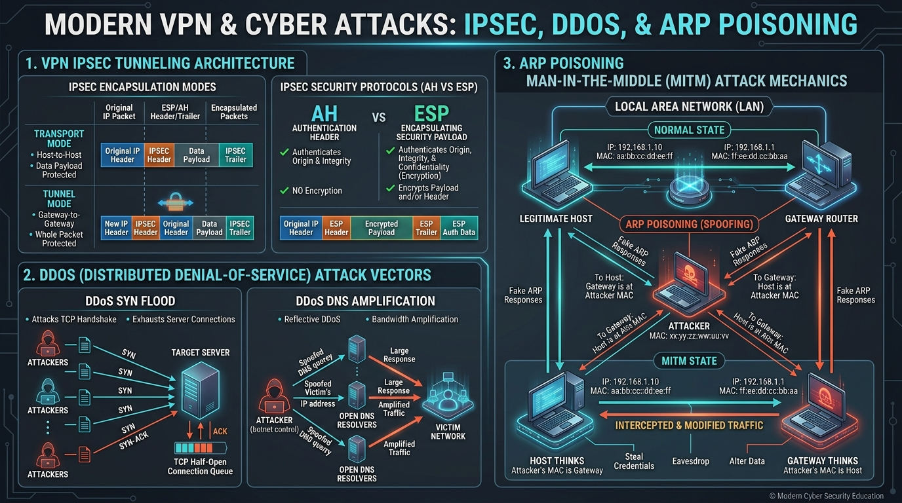

Learn Digital Signatures for non-repudiation, PKI X.509 certificates, TLS 1.3 handshake key negotiation, and IPsec VPN tunneling (AH/ESP).
A Digital Signature provides three security guarantees for network communications: Authentication (sender identity), Integrity (unaltered payload), and Non-Repudiation (sender cannot deny sending the message).
Hash A == Hash B, the signature is VALID!Public Key Infrastructure (PKI) binds an identity (e.g. google.com) to a public key using a **Digital Certificate (X.509 standard)** issued by a trusted **Certificate Authority (CA)**.
Web browsers verify certificates using a **Chain of Trust**:
| Certificate Level | Role |
|---|---|
| Root CA Certificate | Self-signed certificate pre-installed into browser/OS trusted root store. |
| Intermediate CA Certificate | Issued by Root CA to sign end-entity certificates (keeps Root CA offline for security). |
| Leaf / Server Certificate | Issued to end domain (e.g. example.com). |
TLS 1.3 (RFC 8446) completes key negotiation in a single round-trip time (**1-RTT**):
A VPN (Virtual Private Network) creates an encrypted, secure tunnel over a public untrusted network (the Internet).
IPsec (IP Security) is a framework of protocols at the Network Layer (Layer 3) that provides end-to-end security.
| Mode | Header Encapsulation | Primary Usage |
|---|---|---|
| Transport Mode | Encrypts ONLY the IP payload (original IP header stays intact). | Host-to-Host communication. |
| Tunnel Mode | Encrypts the ENTIRE original IP packet (adds new outer IP header). | Gateway-to-Gateway / Site-to-Site VPNs. |
